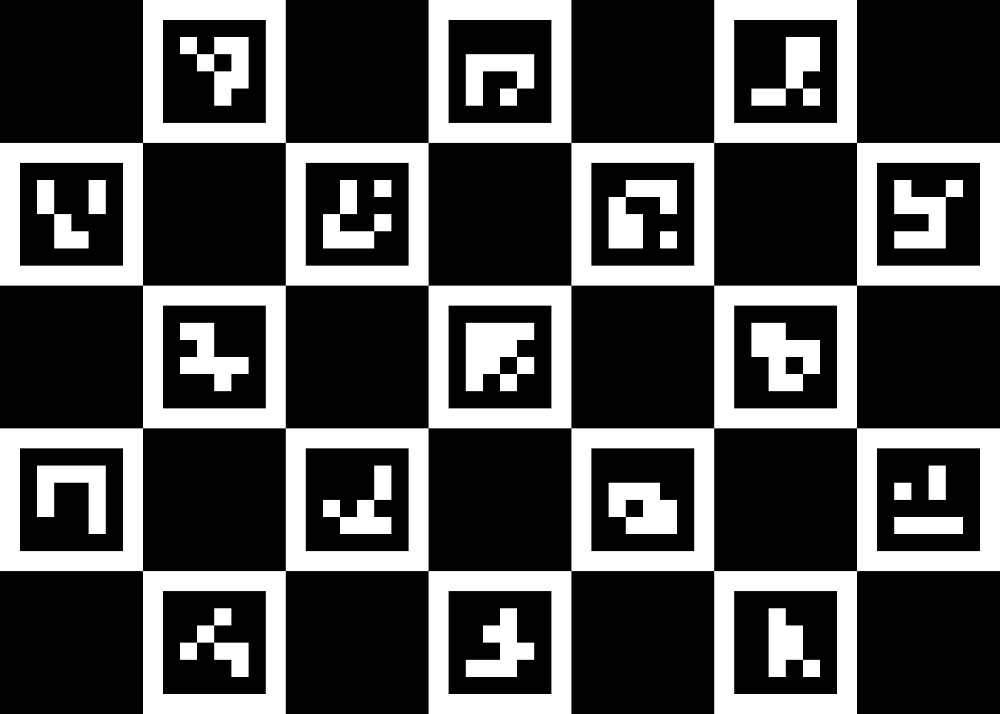

Stampa su un foglio piano e opaco. Non tagliare o coprire la scacchiera. Mantieni le proporzioni: non serve misurare né la stampa né la distanza. Appoggia il foglio su una superficie rigida, torna a Optical Pro e premi Verifica guidata.
Se non puoi stampare, puoi visualizzarlo su un altro schermo piatto, evitando riflessi e sfarfallio. La stampa opaca è preferibile.

Optical Pro · bersaglio ChArUco 7 × 5 · 4x4/50 · v1 — mantenere piano e senza deformazioni